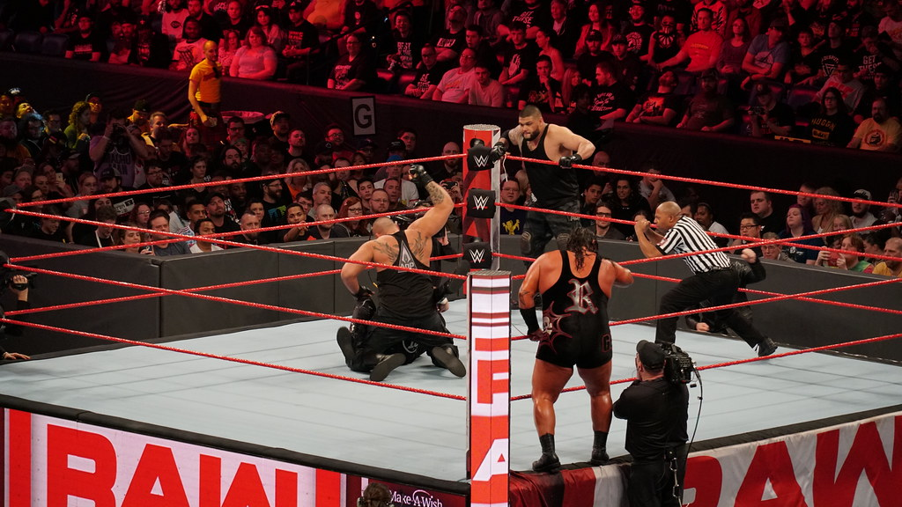

Spectacle Catch
On retrouvera les stars de la discipline, comme David Michel, le loup solitaire favori des foules, Scott Rider, l’étrangleur franco-écossais, ou encore Bella Athéna, la déesse des rings ! A Remiremont.
Le samedi 29 novembre 2025